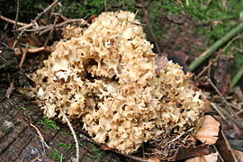

Рідкісні рослини
 Зліва направо: Мутин малиновий; Альдрованда пухирчаста; Плаунець заплавний; Булатка червона; Любка зеленоквіткова
Зліва направо: Мутин малиновий; Альдрованда пухирчаста; Плаунець заплавний; Булатка червона; Любка зеленоквіткова
Неоцінені рослини
Зліва направо: Баранець звичайний;Зозульки Фукса;Лілія лісова;Підсніжник звичайний;Шафран Гейфеля
Вразливі рослини


 Зліва направо: Плодоріжка блощична;Махаон;Мнемозина;Росичка англійськай;Траунштейнера куляста
Зліва направо: Плодоріжка блощична;Махаон;Мнемозина;Росичка англійськай;Траунштейнера куляста
Зникаючі рослини

Зліва направо: Листочня кучерява; Зелениця триколоскова; Кальдезія білозоролиста; М'якух болотний